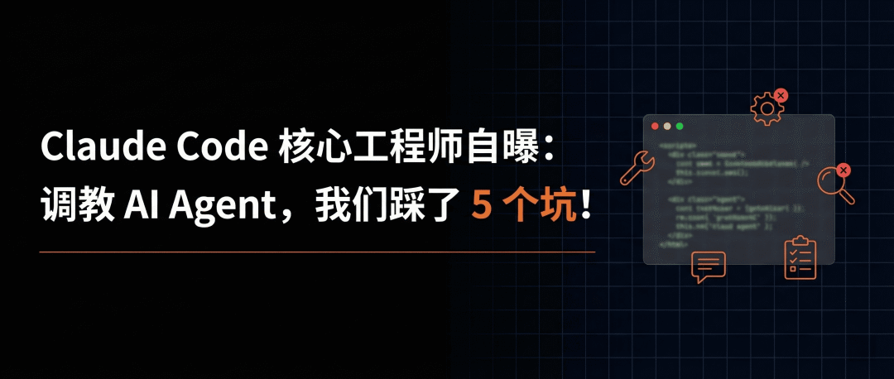

Claude Code 核心工程师系列第三弹。
Claude Code，大约 20 个工具。
围绕这 20 个工具，Anthropic 内部打造了几百个 Skills。
你没有看错，几百个。
这个数字来自 Claude Code 核心工程师 Thariq Shihipar。几天前他又分享了一篇长文，把团队内部 Skills 做了一次全量盘点。9 大分类，一套方法论。
我们之前聊过他另一篇「学会从 AI 的视角看问题」，复盘 Claude Code 的 20 个工具怎么迭代出来的。这次聊的是 Skills。
「Lessons from Building Claude Code」系列，第三篇。

「Skills 不是 Markdown 文件。是一个文件夹。」
Markdown 只是入口。里面可以有脚本、配置文件、数据集、模板资源。
Claude 能自己探索整个文件夹，按需读取。
你把 Skills 当提示词，Claude 就把它当成文字。你把它当工具箱，效果完全不一样。
9 类 Skills，覆盖了写代码、审代码、部署运维、数据分析、团队自动化在内的整条工程流水线。

Thariq 说，好的 Skill 能明确地归属到某一类里。而让人困惑的 Skill，往往横跨好几类。
9 类里面最反直觉的是「产品验证」。
It can be worth having an engineer spend a week just making your verification skills excellent.
验证类 Skills，值得让一个工程师花整整一周来打磨。
一周。只做一个 Skill。听起来很奢侈。
Claude 写完代码，传统做法是等真人来审。Anthropic 换了个思路，让 Claude 自己验证自己。
signup-flow-driver。Claude 改完注册流程的代码，这个 Skill 跑一遍注册→邮件验证→新手引导的全流程。每一步用脚本断言检查状态。
checkout-verifier，用 Stripe 测试卡跑完整个支付流程。tmux-cli-driver，专门检测需要终端交互的命令行工具。
代码写完不用等人审。直接自测。
babysit-pr。给你的代码当保姆。
你把代码提交上去，它盯着。自动化测试挂了，判断是不是偶发失败，是的话重新跑。合并冲突，当场解决。全绿之后再合并。
deploy-<service>，构建→冒烟测试→逐步放量→对比错误率→发现异常直接回滚。一条龙。
adversarial-review，「对抗式审查」。Claude 写完代码，另起一个子代理用全新视角挑毛病，改完再审，循环到只剩鸡蛋里挑骨头为止。
AI 写代码，AI 审代码，AI 盯部署。
人在这套开发流程里的角色，从「执行者」变成了「最终审批者」。
Thariq 的建议，「不要写 Claude 本来就知道的东西。」

Claude 自己很懂代码。你得告诉它那些凭自己想不到的信息。
以前端设计 frontend-design Skill 为例。跳过样式代码教程，专攻设计品位。怎么避开 Inter 字体、紫色渐变、圆角卡片这些「一眼 AI」的设计套路。
这个 Skill 是跟客户反复迭代出来的。
一个 Skill 里含金量最高的部分，是踩坑记录。
每次 Claude 用这个 Skill 碰到问题，记下来。时间越长，踩坑记录越厚，Skill 越好用。

这跟上篇文章讲的「渐进式披露」一个逻辑。
Claude Code 从向量数据库 RAG 检索进化到让 Claude 自己搜代码库，核心就是渐进式披露。
这次 Thariq 把同样的方法搬到了 Skills 上。
入口 Markdown 告诉 Claude 文件夹里有什么。详细的接口文档拆解到子目录。模板放资源文件夹。脚本放根目录。Claude 逐层展开，按需加载。
Think of the entire file system as a form of context engineering and progressive disclosure.
上下文工程 + 渐进式披露。

Skills 的「描述」字段，决定了 Claude 什么时候触发这个 Skill。
如果你写「这个 Skill 用于代码审查」，模型很难判断什么时候该调用。写成「当用户要求审查代码质量，或提交代码之前」，触发条件就清晰多了。

把「描述」当触发条件写，别当产品介绍写。
Skills 可以有记忆。
最简单的做法，创建一个只追加的日志文件。比如 standup-post，每次生成日报都写入日志。下次跑的时候 Claude 拉取上次的记录，就知道哪些变了。

Skills 还可以带钩子（Hook）。
Anthropic 内部有一个 /careful，调用后拦截 rm -rf、DROP TABLE、force-push、kubectl delete 这些高危命令。/freeze 锁定指定目录之外的文件，禁止编辑。
平时不生效，需要时一句命令激活，整个会话有效。
Anthropic 内部的几百个 Skills，走去中心化路线。
小团队直接提交到代码仓库的 Skills 目录。大团队走内部插件市场，上传、安装、自由组合。
内部不设置中心化审核。
好用的 Skills 先扔到 GitHub 沙盒文件夹，在 Slack 推荐。用的人多了再加到正式市场。
但 Thariq 也说了，Skill 门槛低，随手就能糊一个。上架前得有人把关。
他们用钩子机制追踪每个 Skill 的调用频次，哪些火了，哪些没人用，一目了然。
Anthropic 在 GitHub 上开源了一批官方 Skills，Apache 2.0 协议。社区市场也有现成的 Skills 可以直接装。
https://github.com/anthropics/skills
用起来不复杂。在 Claude Code 里运行 /plugin marketplace add anthropics/skills，就能安装官方 Skills。
自己写的 Skill 放到 ~/.claude/skills/ 目录，Claude 会自动发现。
这是 Thariq「Lessons from Building Claude Code」系列的第三篇。
第一篇讲提示缓存，缓存命中率决定 Agent 的速度和成本。第二篇讲工具设计，20 个工具怎么踩坑踩出来的。这一篇讲 Skills，几百个 Skills 怎么写、怎么管、怎么衡量。
别纠结选哪个模型。
Anthropic 已经用几百个 Skills 把模型榨干了。
我是木易，Top2 + 美国 Top10 CS 硕，现在是 AI 产品经理。
关注「AI信息Gap」，让 AI 成为你的外挂。
